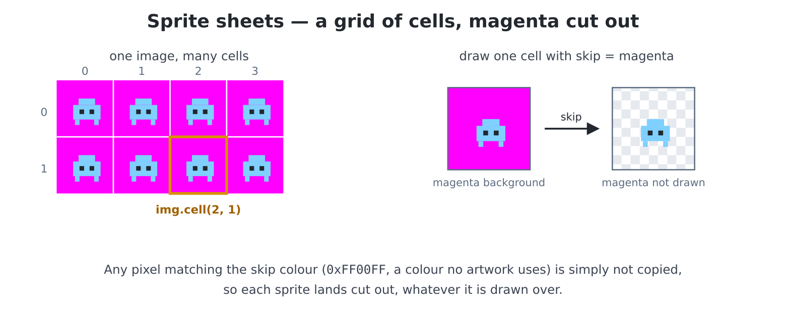

Chapter 15 drew from geometry; this chapter draws from files. Photographs, pixel art, game sprites — pictures made elsewhere (or saved earlier) and summoned to the screen. It comes in two halves again: showing pictures, which turns the machine into a photo frame, and holding pictures in memory to stamp at will — the sprite sheet, which is the raw material of every game in Part IV.
Three decoders, one per format, all injected and ready:
draw_jpg("/sd/holiday.jpg") # JPEG -- photos
# BMP -- simple, huge, dependable
draw_bmp("/sd/logo.bmp")
# PNG -- artwork, with transparency
draw_png("/sd/ghost.png")Each takes x=, y= to place the top-left
corner (default: the screen’s), and draws straight onto the framebuffer
— over whatever was there, console text included. draw_jpg
also takes scale=2 (or 4, or 8) to shrink a big photo on
its way in: a 2560-pixel-wide camera file lands as 640 at
scale=4, which is exactly the trick the slideshow below
uses.
Get pictures aboard the chapter 4 way: fill an SD card from a PC. (Or the chapter 5 ways — XMODEM works on binary files too.)
Show a photograph plainly in the default mode and it will look…
posterised — smooth skies collapsing into bands. No bug:
chapter 15 told you the deal — RGB640 has 256 colours, and
a sunset has more.
The classic cure is dithering: trading colour depth for texture by speckling two nearby colours so the eye averages them. The decoders do it on request:
draw_jpg("/sd/holiday.jpg", dither=True)dither=True (Atkinson dithering — the same algorithm
that made the original Macintosh’s one-bit photos famous) is the setting
to remember. It transforms photos in the 256-colour and 16-colour modes,
and does nothing in the 65,536-colour modes, which don’t need it. And
that leads to this machine’s best photographic surprise:
# 1024x600... 16 colours?!
screen(hdmi.RGB1024)
draw_jpg("/sd/holiday.jpg", dither=True)Full-resolution, sixteen colours, Atkinson-dithered — and genuinely
lovely, in a woodcut-print way. Try it before you doubt it. (The User
Manual, section 10, has the connoisseur’s notes on the other dither
settings; True is the right default.)
The other direction still works, of course —
save_image("art.bmp") from chapter 15 writes the screen
to a file, so anything you draw can be reloaded, traded, or
shown on a PC. Keep it in mind as a screenshot habit, too: it captures
evidence of high scores.
Coming from MMBasic:
LOAD JPG/LOAD PNG/LOAD BMPbecamedraw_jpg/draw_png/draw_bmp, andSAVE IMAGEissave_image— same jobs, same results, dithering included.
Artwork is rarely rectangular — a ghost sprite is ghost-shaped, and
the PNG format records which pixels are see-through (its
“alpha” channel). draw_png honours it: transparent pixels
simply aren’t drawn, and the background shows through. Draw your
landscape, then draw_png("/sd/ghost.png", x=300, y=150) —
the ghost floats over the scene, no rectangle in sight. (The
cutoff= argument sets how opaque a pixel must be to count;
the default is sensible.)
That covers artwork arriving with transparency. Games need something more general — next section.
Drawing from the SD card takes a moment — fine for a photo, hopeless for a spaceship needed sixty times a second. Games keep their artwork decoded, in RAM, and stamp from there. And they pack it as a sprite sheet: one image holding a grid of cells — every frame of every character, side by side. One file to load, one buffer in memory, and any cell stampable by grid position:
d = hdmi.fb()
sheet = load_image("/sd/invaders.png",
transparent=d.colour(MAGENTA))
# col 0, row 0
sheet.cell(0, 0, 16, 16, 100, 80, skip=d.colour(MAGENTA))
# col 3, row 1
sheet.cell(3, 1, 16, 16, 200, 80, skip=d.colour(MAGENTA))load_image(path) decodes into an
Image object (img.w and
img.h tell you its size; img.blit(x, y) stamps
the whole thing). img.cell(col, row, cw, ch, x, y) treats
it as a grid of cw × ch cells and stamps one — col 3,
row 1 of a 16×16 grid, no pixel arithmetic required.
And the skip colour is transparency, part two — the
games version. Any source pixel matching skip is simply not
copied, so the magenta background around each invader stays behind and
the invader lands cut out. Why magenta? Pure convention:
0xFF00FF is a colour no sane artwork uses, which makes it
the industry’s masking tape. The transparent= argument at
load time pre-fills the buffer with it, so a PNG’s transparent regions
become magenta, ready to skip. One colour, two jobs, zero
effort.

Two housekeeping notes from the manual: the decoded buffer is in the
current mode’s pixel format, so reload your images after a
screen() change (the chapter 15 rule, extended);
and in RGB1024 keep cell widths and x-positions even.
hdmi.blit: the
universal rectangle movercell and img.blit ride on something more
general, worth knowing by name because chapters 17 and 18 live on it.
hdmi.blit(...) copies any rectangle — screen to screen,
memory to screen, screen to memory:
# copy a 100x80 patch of the screen 200px right
hdmi.blit(50, 50, 100, 80, 250, 50)
# shift a whole strip 4px left -- instant horizontal scrolling
hdmi.blit(4, 100, hdmi.width() - 4, 60, 0, 100)The second line is the one to sit with: shifting a region over itself
is legal and fast, and it is how marquees, scrolling landscapes and
chapter 19’s camera all move. Blits also take the skip=
colour, and can be clipped off-screen safely. (The full signature,
including copying between the screen and the off-screen buffers we meet
next chapter, is in the manual — section 5.)
Coming from MMBasic: this is
BLIT, feature for feature — skip colour, overlapping copies and all.load_imageplays the role ofBLIT READ’s memory frames, with the sheet cut into cells for you.
Here is a satisfying loop-closer: the machine can manufacture its own sprite sheets. Draw cells with chapter 15’s tools, save, reload:
d = hdmi.fb()
MASK = d.colour(MAGENTA)
d.fill(MASK) # transparent-to-be
# four 32x32 cells in a row
for i in range(4):
x = i * 32
d.fill_rect(x + 4, 10, 24, 18, d.colour(GOLD)) # body
d.fill_rect(x + 8, 4, 16, 8, d.colour(LITEGRAY)) # head
# left leg
d.fill_rect(x + 6, 28, 4, 4 - i % 2 * 2, d.colour(RED))
# right leg
d.fill_rect(x + 22, 28, 4, 2 + i % 2 * 2, d.colour(RED))
save_image("robot.bmp")Four robots, legs alternating — a walk cycle, drawn by loop. Now load the sheet back and animate it, treating your own drawing exactly as you would a sprite sheet bought from an artist:
import time
d = hdmi.fb()
MASK = d.colour(MAGENTA)
bot = load_image("robot.bmp", transparent=MASK)
d.fill(d.colour(0x102040))
for step in range(60):
frame = step % 4
bot.cell(frame, 0, 32, 32, 40 + step * 8, 200, skip=MASK)
time.sleep(0.1)It walks — leaving a trail of itself, admittedly, because nothing erases the old frames yet. That smear is not a bug to fix today; it is chapter 17’s opening scene. What matters tonight: you drew, saved, loaded, cut and animated a sprite sheet without a PC in the room.
The machine earns its place on a shelf.
edit("frame.py"):
import os
import time
import random
DELAY = 8 # seconds per photo
def photo_list():
try:
files = os.listdir("/sd")
except OSError:
return []
return sorted(f for f in files if f.lower().endswith((".jpg",
".jpeg")))
d = hdmi.fb()
while True:
photos = photo_list()
if not photos:
d.fill(d.colour(BLACK))
hdmi.text("no photos -- insert SD card", 40, 40,
d.colour(GRAY))
time.sleep(3)
continue
pick = random.choice(photos)
try:
draw_jpg("/sd/" + pick, dither=True)
except OSError:
# card pulled mid-read: just retry
continue
caption = pick.lower().replace(".jpeg", "").replace(".jpg",
"")
hdmi.text(caption, 8, hdmi.height() - 16, d.colour(LITEGRAY),
d.colour(BLACK))
time.sleep(DELAY)Read it as a chapter-13 graduate: the SD card can vanish at any
moment (it lives in someone’s hallway now), so every touch of
/sd is guarded, and an empty card is a message, not a
crash. The parts you built earlier are all on shift —
endswith with a tuple filters, replace cleans
the caption, random.choice picks, and the caption’s solid
bg= is the eraser trick in disguise. Install it as
/main.py (chapter 5) and the machine boots straight into
the family album; run it in RGB1024 for the gallery-print
look.
dither=False, dither=True, and mode
RGB1024 with dither=True. Same file, three
eras of computing.draw_jpg(f, x, y, scale=8) tiles
camera photos at thumbnail size — two loops (chapter 9’s
arrangement/element!) over a 4×3 grid, filenames in font 8 beneath
each.save_image your chapter 15 poster,
load_image it, and use the shift-over-itself blit to slide
it across the screen. Then try shifting up.frame.py, honour a caption file: if
beach.jpg has a beach.txt beside it, show that
text instead of the filename (chapter 12;
try/except for when it doesn’t).frame.py grown up: sorted
order with a remembered position (a one-line file, chapter 12), a title
card at boot, and a “no repeats until all shown” shuffle (chapter 10’s
remove trick).cp the
BMP to /sd, and write the loader another program can import
(robots.py with a walk(x, y, step) function —
chapter 11 says you know what to do).img.blit’s sx/sy arguments
are the viewport.)gettime() (12), and
save_image the lot as a postcard file for the SD card. One
program, five chapters, one keepsake.